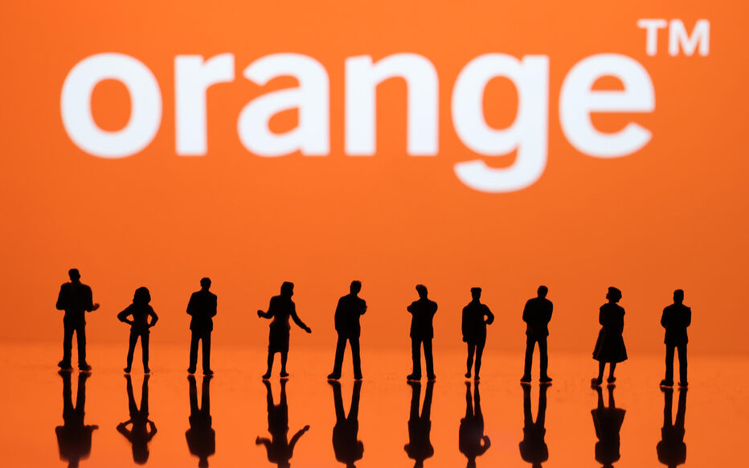
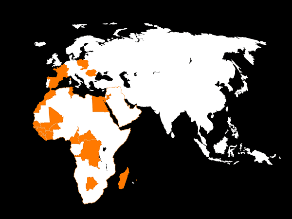
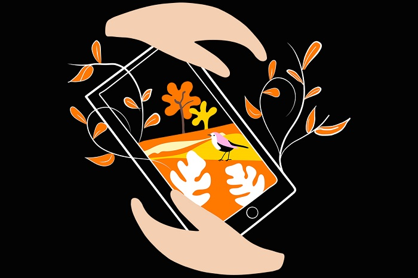

Nos Engagements
Nous sommes l'un des principaux opérateurs de la télécommunication au monde. Nous avons été fondés en 1988 sous le nom de France Télécom et avons changé notre nom pour Orange en 2013. En conséquence, nous sommes devenus une marque emblématique dans les secteurs des télécommunications et des technologies de l'information. En effet, nous offrons une large gamme de services de télécommunications, notamment la téléphonie mobile, les services Internet haute vitesse, la télévision numérique et la téléphonie fixe. Mais nous nous diversifions dans d'autres domaines, tels que la fourniture de solutions de communication et de connectivité aux entreprises, notamment les réseaux d'entreprise, les solutions de sécurité, le cloud computing et bien plus encore.
Introduction

Notre projet repose sur la mise en œuvre d'un nouveau modèle économique fondé sur trois mots clés : performance , excellence et confiance, avec au cœur les enjeux environnementaux, sociaux et de gouvernance. La qualité de nos infrastructures, notamment notre leadership en fibre optique, la satisfaction de la clientèle et l'expertise de notre personnel, ainsi que notre tres bonne situation financière, sont de réels atouts sur le marché. De plus, nous bénéficions d'une position unique dans l'industrie due à notre maîtrise des problématiques de connectivité, de sécurité et résilience. L'objectif de notre projet est d'exploiter et de développer ces atouts pour positionner Orange comme un groupe bâtissant l'avenir des télécommunications et des solutions numériques. Nous visons une croissance durable, notamment dans nos activités de cybersécurité et en Afrique et au Moyen-Orient.
Nos activités dans le monde

Aujourd'hui, nous sommes l'un des plus grands opérateurs de télécommunications au monde, proposant une palette diversifiée de services dans de multiples pays. En effet, grace à notre plan stratégique : Lead the Future, nous sommes présent dans de nombreux pays du monde :
Afrique et Moyen-Orient : Botswana, Burkina Faso, Cameroun, Centrafrique, Côte d'Ivoire, Égypte, Guinée Bissau, Guinée Conakry, Jordanie, Liberia, Mali, Maroc, République Démocratique du Congo, Sénégal, Sierra Leone, Tunisie
Océan Indien : Ile Maurice, Madagascar
Europe : Belgique, Espagne, France, Luxembourg, Moldavie, Pologne, Roumanie, Slovaquie
La connexion à internet
Nous sommes aussi présent dans le secteur de la connexion internet car 99% de la population est couverte en 4G dans nos 8 pays européens, nous sommes N°1 pour la qualité du réseau mobile en France pour la 12ème année consécutive. 17 pays sont couverts en 4G en Afrique et Moyen-Orient. Question Fibre, nous sommes leader européen, avec 13,7 millions de clients FTTH (Fiber To The Home) et 65 millions de foyers connectés au 31 décembre 2022.
La cybersécurité
De plus, nous nous concentrons aussi sur la cybersécurité effectivement les conséquences des cyberattaques qui sont de plus en plus fréquentes et importantes sont un point que nous voulons réduire. Le coût de la cyber-malveillance est estimé à 6 000 milliards de dollars dans le monde.Nous nous devons donc de proposer des services de cybersécurité des plus efficasses aux entreprises grâce à Orange Cyberdefense, nous sommes sommes donc tenu de détecter ces menaces et protéger nos clients. Nous garantissons alors, à nos clients, une sécurité maximale, quels que soient leur secteur d’activité et leur taille.
Les réseaux de communications
Par ailleurs nous investissons massivement dans les infrastructures de communication sous-marines. En effet, 450 000 kilomètres de câble sous-marin sont actuellement déployé, soit plus de dix fois le tour de la planète ! , assurant ainsi 99 % du flux internet intercontinental. Cela est possible grâce à Orange Marine, qui se charge du déploiement, de la maintenance et des réparations de ces câbles. Par ailleurs, nous utilisons les communications par satellite pour offrir des services VSAT à nos clients entreprises, ainsi que pour connecter des sites isolés en Afrique. En mars 2023, un partenariat avec OneWeb a été établi pour améliorer la connectivité dans les zones rurales d'Europe, d'Amérique latine et d'Afrique, et pour offrir des solutions haut débit, toujours plus efficasses aux entreprises.
Nos objectifs future
Notre regard est résolument tourné vers l’avenir. Nous restons engagés en faveur de l'innovation et de la concurrence technologique, en adoptant les normes 5G et en développant des solutions numériques de pointe. De plus, nous prenons très au sérieux nos responsabilités sociales et environnementales, en guidant nos décisions vers des pratiques durables et respectueuses de la planète. En fait, nous visons la neutralité carbone d'ici 2040. Cela signifie que nous devons déployer d'énormes efforts pour réduire les émissions directes et indirectes de CO2 : efficacité énergétique, énergies renouvelables, économie circulaire, captation du carbone.

De plus, nos programmes promettent l'égalité et l'inclusion numérique. Nous nous engageons à travailler pour réduire les inégalités liées à l'accès, à l'équipement, à l'usage et à la maîtrise des technologies numériques en favorisant la connectivité, l'inclusion et le développement des compétences sans discrimination. Nous sommes convaincus que cette démarche est source de progrès et un facteur d’égalité des chances pour chacun. Notre ambition dépasse les frontières du profit, cherchant à apporter une contribution positive à la société et à l'environnement qui nous entoure.